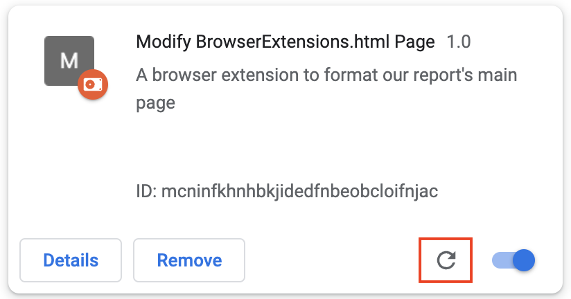
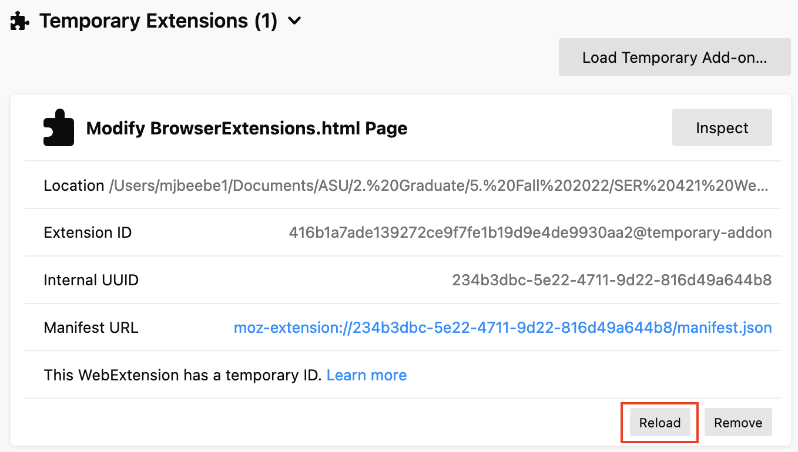
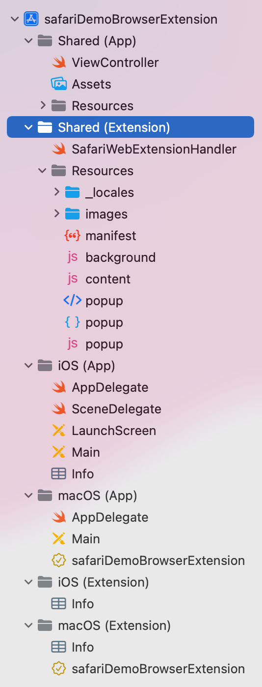

At the conclusion of this tutorial, the student will
In this section, we'll cover how to make a browser extension using two formats: the Chromium way (used for Google Chrome, Mozilla Firefox, Opera, Microsoft Edge, and Brave) and the Apple Safari way. Below, we'll show you how to make your own browser extension for Google Chrome, Mozilla Firefox, and Apple Safari, as those are the most commonly used browsers on the market today [18].
It's important to note that there isn't really a industry standard on browser extension format - but because of the dominance of Google Chrome in the web browser world, most browsers have opted to follow Chrome's browser extension format to facilitate integration of developer integrations originally designed for Chrome into their own platforms. You can learn more about the history of browser extensions here.
Additionally, we have a demo of how to make a browser extension in Chrome and Firefox that highlights what's covered in the tutorials below. You can download the demo scource code by visiting the GitHub here, and watching the video demo here.
(Jump to a particular section by clicking a link below)
Before making your files, you need to create a directory/folder to house your files (i.e., your manifest.json and your Javscript file(s)). Create, name (anything you want!) and save this directory/folder on your computer. Remember where it is located - you'll need to navigate to it later on!
manifest.json file manifest.json manifest.json file, you will need to have the following items. An example is shown in the image below. manifest.json file in the directory you created in step 1. manifest.json file, create and name (should be descriptive of its functionality/your extension!) a new Javascript file. manifest.json file to target a particular page using your Javascript script manifest.json file and add a content_scripts section, as shown in the image below. Specify the page(s) you want to target by giving a value to the matches key, and the Javascript file you want to use by assigning that Javascript file's name as the value to the js key. file://*/*/SER421_BrowserExtensions/BrowserExtensions.html and using the Javascript file tutorial.js . We included these values in brackets as array items - and we recommend you do so too! That way, you can add additional files in the future to apply additional extension settings. manifest.json file. chrome://extensions in the URL and go to the pageNow that your browser extension is unpacked, you can navigate to the page you listed in Step 4.1 and see what your Javascript file does to it.
If you ever need to update your browser extension to fix issues or add functionality, you can easily do so! Just make the changes locally and - as long as the load you unpacked in Step 5 points to the same directory - all you need to do is click the 'reload' icon, shown in the image below.
Note: It is good practice to update the version value in your manifest.json file each time you apply a new version of your browser extension.
(This is going to be similar to the Google Chrome tutorial above, but with some subtle differences!)
Before making your files, you need to create a directory/folder to house your files (i.e., your manifest.json and your Javscript file(s)). Create, name (anything you want!) and save this directory/folder on your computer. Remember where it is located - you'll need to navigate to it later on!
manifest.json file manifest.json manifest.json file, you will need to have the following items. An example is shown in the image below. manifest.json file in the directory you created in step 1. manifest.json file, create and name (should be descriptive of its functionality/your extension!) a new Javascript file. manifest.json file to target a particular page using your Javascript script manifest.json file and add a content_scripts section, as shown in the image below. Specify the page(s) you want to target by giving a value to the matches key, and the Javascript file you want to use by assigning that Javascript file's name as the value to the js key. file://*/*/SER421_BrowserExtensions/BrowserExtensions.html and using the Javascript file tutorial.js . We included these values in brackets as array items - and we recommend you do so too! That way, you can add additional files in the future to apply additional extension settings. manifest.json file. about:debugging in the URL and go to the page manifest.JSON file. Click "Open". Firefox will then upload your directory to your browser.Now that your browser extension is unpacked, you can navigate to the page you listed in Step 4.1 and see what your Javascript file does to it.
If you ever need to update your browser extension to fix issues or add functionality, you can easily do so! Just make the changes locally and - as long as the load you unpacked in Step 5 points to the same directory - all you need to do is click the 'reload' icon, shown in the image below.
Note: It is good practice to update the version value in your manifest.json file each time you apply a new version of your browser extension.
This is quite a bit different than the Chromium approach!
NOTE: You're going to need a Mac with Xcode installed (and of course Apple Safari web browser) to do this part. This tutorial uses Xcode version 14.0.
com When you've completed these steps, Xcode should automatically open up your project. You should see a default manifest.json like in the image below.
Now that the template app has been built and added to your Safari browser, you can make some changes to the code.
In Xcode, on the left hand side, you can see your project stack. Xcode Safari Extension Apps can have their functionality defined for specific systems like iOS and macOS, in the event you want to do something different based on the device. There is also a shared folder called 'Shared (Extension)' where you can house common functionality across OS's.
You'll notice that Safari Extension Apps are more heavy-duty than Chromium-based extension formats. They are literally full-blown apps being loaded into the Safari browser! They contain source files and even controllers to direct/route requests to appropriate funcitonality! The default controller ViewController file under the 'Shared (App)' directory, for example, determines which View to display to the user based on which OS (iOS vs. macOS) the user is using Safari in.
ViewController file under the 'Shared (App)' directory. Write your code in Swift to dictate routing of the requests/events from the browser. SafariWebExtensionHandler file under the 'Shared (Extension)' directory. Write your code in Swift to dictate how you want to handle the routed request. .storyboard files in the iOS and macOS (App) directories. These .storyboard files contain the View items, and you can manipulate them using the interactive window (i.e., clicking/moving the items around using your mouse/trackpad and selecting items to view and select their properties).